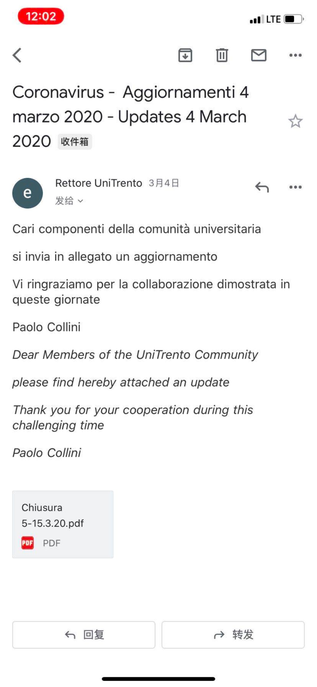
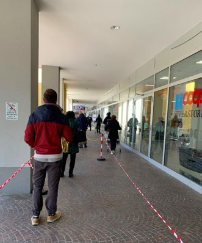
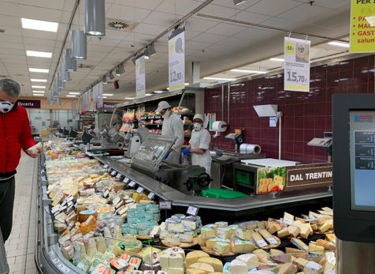

确诊7375例！床位告急、医护感染…意大利不仅封城，全国电影院、博物馆也关了
原文链接 备份链接 根据当地时间3月8日18时意大利卫生部公布的最新数据，意大利现有新冠病毒患者6387例，死亡366例，治愈622例，累计确诊感染新冠病毒总人数为7375例，较3月7日18时新增1492例，新增133例死亡病例。 据外 …
我不太确定学校停课的时间会不会继续延长。因为我们在群里对此次意大利疫情的预测是不太乐观的。
记 者 | 应 琛
受访者 | 王艺林
上午在宿舍自习完之后，我习惯性地打开新闻网站了解当天意大利新冠肺炎疫情的最新情况。我叫王艺林，目前在意大利北部城市特伦托学习生活。在国内读研的我，在去年9月作为交换生来到特伦托大学。

特伦托大学 图片来源于网络
本打算在这里进行为期一年的学习交流，不承想新学期开学还没几天，学校就发通知宣布停课至4月3日。
如果没有这次疫情的话，我可能也不会养成每天刷意大利各大主流媒体报道的习惯。
一番纠结之后，我决定留在意大利
此次新冠肺炎疫情，意大利北部是重灾区。我所在的城市特伦托也在北部，隶属特伦蒂诺-上阿迪杰大区，并且就在疫情最严重的伦巴第大区东面。但因为城市本来就比较小，人口密度不高之外，这里也不是热门的旅游城市，人口流动本来也不是很多。
截至3月17日10时，整个特伦蒂诺-上阿迪杰大区的确诊人数为619人。虽然确诊人数每天都在攀升，但总体而言，这里没有出现过于混乱的情况。特伦托其实一直到3月初都是没有确诊病例的。
从国内疫情暴发到现在全球的蔓延，我的心情是经历了一定起伏的。现在回头来看，我个人比较害怕的阶段主要有两个。
第一个阶段是在国内刚开始暴发的时候，主要担心自己的父母。因为人不在国内，很多中老年人一开始并不重视，就会比较担心他们出门不戴口罩，万一被感染之类的。当时，我每天都会给家里联系，提醒父母要做好个人防护。
第二个阶段是在意大利确诊病例破千，并迅速增长的那几天。
伦巴第大区和威尼托大区是此次意大利新冠肺炎疫情最为严重的地区
意大利此次疫情应该是在2月21号开始暴发。当天伦巴第大区一个叫洛迪（Lodi）的镇上确诊了意大利“1号病人”，他是在境内传播的，并不是一个输入型病例。
当时，疫情严重的地方主要就是伦巴第大区的洛迪周边，还有就是我们大区东边的威尼托大区(Veneto)的帕多瓦（Padova）。
我所在的当地留学生群内那时也还是比较平静的，因为对于新冠肺炎疫情的消息，说真的，还是中国人来得更灵通，不论是意大利主流媒体的报道，还是国内报道意大利疫情的新闻，都有人会发到群里。我自己除了看一些意大利语报道外，还会上一个叫“奋斗在意大利”的网站，上面的消息来自于意大利主流媒体，是实时更新，并且翻译成中文的。
“奋斗在意大利”网站每天都会更新疫情数据
但意大利整体疫情的发展速度超出想象地快，很快确诊病例就破千了。而就在3月1日，特伦托也出现了第一个确诊病例。她是一个83岁的独居老奶奶，因此是不可能自己去过疫区的。换言之，是在我们大区内出现了传染现象。不仅如此，她就是在离我宿舍不远的一个医院确诊的。之后3月3日，跟她有密切接触的另外三个老人也确诊。而第五个确诊病例则是她的弟弟。也是从那时起，我们这边每天的确诊人数开始有规律地增长。
3月初的那几天可以说是我最焦虑的一段时间，每天都能刷几十遍新闻网站，看看疫情的变化和政府新发布的政策。你会发现，一开始意大利方面还是实时更新数字的，但后来量实在太大了，就统一每天傍晚进行更新。
从情感上来说，我肯定是想回到父母身边的。毕竟，这里的防疫措施和效果跟国内明显不一样。但理智又告诉我，目前留在宿舍，尽量减少出门是最安全的。中间也经过多次反复，有时白天急切想回国，晚上又跟自己说不能回去。当时，我妈还跟我说，你要是实在害怕就回来吧。
在疫情发生之前，我每天都尽量和家里打电话，大多数情况也就是报个平安，有可能几分钟就挂了。但是像现在因为停课待在宿舍，每天打电话时间几乎都要超过1小时。其实，也是让双方都安心。
后来经过和父母的讨论，大家都觉得留在意大利比较好。一方面，回国路上有感染的风险；另一方面，现在国内入境政策每天都在变，也在逐渐收紧，即便下了飞机也可能根本回不了家。
因为我是上海外国语大学的研究生，所以也认识许多在其他国家读语言的校友，像葡萄牙、西班牙、法国和德国的都有。可以说，我们这段时间的联系明显要比以前频繁得多，大家除了互相安慰，也都是比较理性的，学校也都时刻关心着我们的情况。
说起来也挺荒诞的，我们无奈时偶尔互相比谁“数字涨得快”。所以像意大利确诊数已经超过2万，我便成了很多同学的“精神支柱”。而在意大利确诊人数还没有超过韩国之前，我在韩国留学的高中同学一直是我的“精神支柱”。事实上，开玩笑之余大家心里都期盼着疫情能尽快过去。
措施发布及时，但效果不佳
我所在的文学系在2月17日开学。但开学第一周，我选修的课程其实都还没有开课。2月22日，意大利疫情暴发的第二天，我们学校就第一次通知，停课三天。到了2月25日，学校又发了邮件说，停课到3月1日。之后是3月4日，学校邮件说停课到4月3日，并开始上网课。

学校发来的通知停课的邮件 受访者供图
这也是为什么我觉得意大利政府这一次行动其实算是比较快的，因为在疫情刚暴发没多久，基本上北部所有大区的学校都已经通知要停课了。
另一方面，意大利在中国疫情暴发的时候就停止了与中国的双向直航。群里几个回国过年的同学还担心回不了意大利，立即转机飞回来的。当然，其实本来往返意大利转机的情况也很多，毕竟机票能便宜很多。
我同一宿舍区的一个同学是1月27日回到特伦托的，但在2月1日，她就接到当地警察局的电话，通知她必须到山上的统一隔离点进行隔离，费用是免费的。
虽然意大利这些政策出得挺快，但还是有漏洞的。
比方说，一开始意大利只检查和隔离中国人，对从中国回来的意大利人并没有采取措施。另外，听我那个同学说，虽然她去隔离了，但那边的隔离措施也不是很严格。我同学说，她看到隔离点里当地红十字会的工作人员并没有戴口罩。而且，意大利是从她入境的那天开始算14天，所以她其实在隔离点并没有待满14天。
2月22日，意大利就已经封了伦巴第的十个市镇，即为“红色”区域。3月8日，整个伦巴第大区和11个省市被纳入“红色”封锁区域，禁止出入。但就在当天，我们这边又出了一个新闻，称发现了一对从“红区”出来到我们这里滑雪的夫妇。所以也可以看出，意大利的封城措施并不严格。

3月8日在意大利伦巴第大区米兰中央火车站内拍摄的一名戴着口罩的女子 图｜新华社
另外一方面，意大利的医疗水平是很好的，技术也十分先进。像我们留学生都加入了意大利国家体系的医疗保险，每个人不仅会有家庭医生，平时在他那里看诊也都是免费的。在我看来，只能说意大利在面对传染规模如此之大的疫情时，医疗资源是不够的。没有足够的床位，没有足够的口罩，也没有足够的防护服等等。这也是为什么当地的口罩很快就被华人买空的原因，因为他们就没有储备的概念。
也想戴口罩，但真的买不到
我的情况比较特殊，因为我平时会有一些过敏的情况，从国内来意大利的时候就带了两包一次性的医用口罩。所以，我是没有在这里抢购过口罩的。后来也不太出门，目前我还剩下20个左右。
但我身边有留学生朋友在钟南山院士宣布“人传人”的时候，就已经去囤了一点口罩。当时亚马逊上的价格还是10欧元50个一次性的医用口罩。但到了2月初，价格就已经涨到30欧元左右了。
我那时受朋友所托，特地花了一下午一路从宿舍走到市中心，打算去帮她买点口罩。但去的五个药店全都卖光了。
现在，我们这里就算愿意花大价钱也已经完全买不到口罩了。不过，买口罩的主要还是华人。意大利人说实话，至少我接触的同学，他们的态度都比较无所谓。

从宿舍望出去，仍有一些意大利学生围聚在一起 受访者供图
虽然有很多人说意大利的反华情绪非常严重，但就我个人而言，并没有碰到过。像我们宿舍是公用厨房，跟我共用一个厨房的意大利和其他国家的同学，都挺友好的。在国内疫情严重的时候，他们还会关心我，问我家里的情况。
即便如此，我有同学因为戴口罩遭受过一些意大利人的不友善。所以，说实话，我最早出门的时候并没有戴口罩，因为当地真的没有人戴。在意大利人的观念里，生病的人才需要戴口罩，为的是不传染给别人。但即使这样，很多意大利人即便知道自己生病也不会戴口罩，说白了没有这样的习惯。
当然，当时我不戴口罩也是基于当地疫情并不严重。
3月10日，在新冠疫情日益严重的情况下，意大利宣布“全国范围”的封锁。我因为担心之后会出现抢购的情况，所以我第二天一大早就去了当地的超市采购。我也是从这天开始出门都戴口罩的，安全第一，管不了那么多了。

意大利超市
所幸当天并没有出现超市被抢购一空的情况。但这也可能分地区，因为我查到新闻说，米兰其实很早就有超市被抢空的现象。而早在封城的时候，更有一堆人涌入米兰火车站。他们之中有人是根本没有车票的，甘愿冒着逃票被高额罚款的风险也要离开。
那天，卫生纸我也买到了，但最主要的还是吃的，比如蔬菜和肉之类的。第三天，我和同学还特地去了中超（华人开的超市）囤了20包方便面，以及一些白菜和萝卜。其实当天老板因为担心疫情已经自发关门不营业了。他就住在超市楼上，我们是给他打了电话，请他通融一下让我们进去买点东西的。这个时候也特别能体会到“同胞爱”。但后来，意大利政府也出了规定，除一些必要的商店外，其他一律不能营业。
随着疫情的发展，我也问过意大利同学，有没有想过戴口罩。他们也挺无奈的，去药店买过，但根本买不到。
现在，有很大一部分意大利人已经认识到究竟应该怎样正确的隔离，会乖乖地待在家里不出门。但难免也有一些“头比较铁”的，像我们宿舍区前些天还有一些学生，三三两两聚在草坪上晒太阳、野餐和聊天。

3月12日，市中心仍然举办了集市
我昨天（3月16日）早上又去了一次超市补货，就看到门口已经开始限流了。保安还会要求每个进店的人先用免洗洗手液消毒。

超市门口开始限流 受访者供图
店内所有的工作人员都已经戴上口罩。顾客的话，我目及范围内有超过六成也戴着口罩。

工作人员戴着口罩 受访者供图
超市里所有品类的商品还是比较全的，卫生纸、消毒液等都还有。


超市货架还算满 受访者供图
学校停课后，我熟悉的意大利同学都已经回家了。接下来，我是打算尽可能两周内不出门了。因为基本上都待在宿舍，平时一些碎片化的时间都被整合了，其实很适合做一些集中的学习。这周起，我也要开始上网课了。不上课的时间，准备写写毕业论文。
目前，我不太确定学校停课的时间会不会继续延长。因为我们在群里对此次意大利疫情的预测是不太乐观的。第一，其他欧洲国家都没有像意大利这样迅速的应对，之后德、法、西等国家的数字会很快涨起来。第二，即便意大利这边控制好了，因为欧盟没有封禁措施，很有可能会出现输入型病例或者说确诊倒流。
【记者了解到，欧委会主席冯德莱恩昨天（3月16日）在其社交媒体宣布，欧盟将进入禁止“非必要”的旅行者进入欧盟区域，以应对新冠疫情的发展。该禁令是暂时性的，有效期30天，如果需要还将延长。】


· 欧洲27国无一幸免，张文宏：后续发展不容乐观，跨年度疫情风险越来越大
· 我在海外 | 看到英国政府发布“群体免疫”政策，我开始慌了
· 军事 | 受疫情影响，北约“寒冷反应”演习取消，规模更大的“欧洲捍卫者20”呢？
新民周刊所有平台稿件， 未经正式授权
一律不得转载、出版、改编或进行
与新民周刊版权相关的其他行为，违者必究


原文链接 备份链接 根据当地时间3月8日18时意大利卫生部公布的最新数据，意大利现有新冠病毒患者6387例，死亡366例，治愈622例，累计确诊感染新冠病毒总人数为7375例，较3月7日18时新增1492例，新增133例死亡病例。 据外 …
原文链接 备份链接 截至当地时间24日零时，意大利累计确诊157例新冠病毒肺炎感染病例，2人治愈出院，新增1例死亡病例，累计3例死亡病例。据欧联通讯社报道，死者是一位身患癌症的年长女性，确诊被感染新冠肺炎病毒后不治。 意大利紧急民防部部 …
原文链接 备份链接 “Dio ha scelto di stare dalla nostra parte.” ********************** 在2月21日之前，意大利新冠肺炎确诊病例仅有3例。然而截至当地时间3月10日，意大 …
原文链接 备份链接 据最新数据，意大利确诊新冠病例数已超过7000，累计死亡366例，是除中国之外，全球疫情最严重的国家。 在意大利的华侨人数众多。武汉疫情起来时，他们积极捐款捐物，把当地能买到的口罩一扫而空。 意大利医疗系统对新冠 …
原文链接 备份链接 体坛周报全媒体驻意大利记者 陈硕麟 3月7号晚间，意大利新冠病毒累计感染病例逼近6000大关，当天骤增的1200余例新确诊病例，也比前日高出一倍。于是，意大利政府将红色封锁区域的范围扩大，整个伦巴第大区都被封锁，除了紧 …